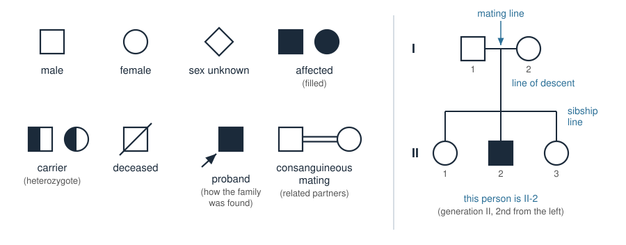
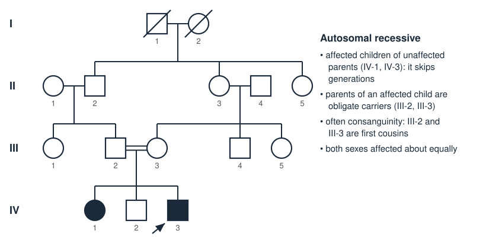
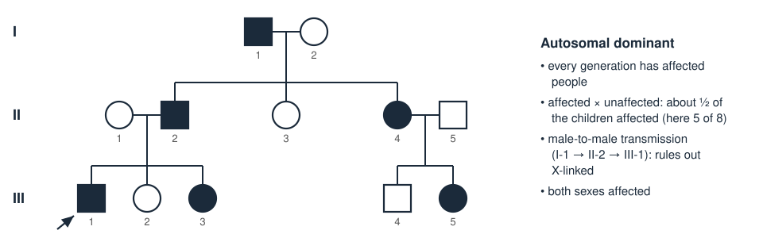
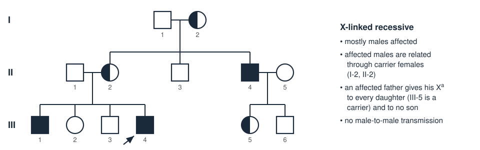
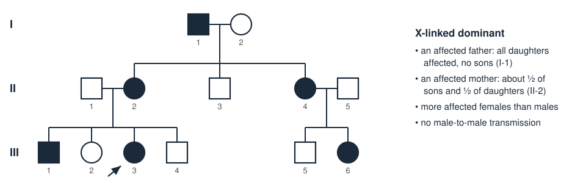

We cannot set up crosses in humans. To learn how a human trait is inherited, we read the family tree that already exists: the pedigree.
The standard symbols of a pedigree, and how to name each person (II-3).
The hallmarks of five modes of inheritance: autosomal recessive, autosomal dominant, X-linked recessive, X-linked dominant and Y-linked. Mitochondrial inheritance gets a brief mention.
A strategy: do not try to prove a mode; rule modes out, one family at a time.
Risk calculations: the 2/3 carrier probability, partners from the population, and children of relatives.
Complications: incomplete penetrance, new mutations and ascertainment bias.
You already know Mendel’s laws, the χ² test and the probability rules (product rule, sum rule, conditional probability). Today we use all three. Book: Hartwell, Mendel’s principles chapter (pedigrees) and the chromosome theory chapter (sex-linked traits).
Why humans need pedigrees
In peas or flies we choose the cross: true-breeding parents, a test cross, hundreds of offspring. In humans we can do none of this.
Experimental organism
Humans
Crosses
chosen by the geneticist
chosen by the people
Offspring per family
hundreds
usually 1–4
Generation time
days to weeks
25–30 years
Genotypes of parents
known (true-breeding lines)
unknown
So we collect what already happened: who is affected, and how they are related, over as many generations as we can trace. One family is small, so a 3:1 ratio is rarely visible. Instead we look for patterns that are impossible under a given mode.
The symbols

Generations are roman numerals from the top; people are numbered left to right within a generation, so “II-2” names one person.
The proband is the affected person through whom the family came to attention. Remember this: it matters for bias later.
Half-filled means a known (or obligate) heterozygous carrier. Most pedigrees do not show carriers, because nobody has tested them.
Autosomal recessive

The affected person is aa; both parents are usually unaffected carriers (Aa × Aa), so ¼ of their children are expected to be affected.
The trait skips generations: it appears among siblings, often with no affected ancestor.
Consanguinity (a double line) is common: relatives are more likely to carry the same rare allele.
Examples: phenylketonuria (PKU), cystic fibrosis.
Autosomal dominant

Every affected person has an affected parent (with full penetrance and no new mutation): the trait appears in every generation.
Affected (Aa) × unaffected (aa) gives ½ affected children, of either sex.
Male-to-male transmission (father → son) is possible. A son gets his father’s Y, not his X, so this rules out X-linkage.
Examples: Huntington disease, Marfan syndrome.
Sex linkage, just enough for pedigrees
Recap only; Part 2 (Chromosome theory) covers sex chromosomes properly.
Females are XX; males are XY. A male has one X, so he is hemizygous for X-linked genes: a single recessive allele shows.
A father gives his X to every daughter and his Y to every son.
A mother gives one of her two X chromosomes to each child, ½ each.
Notation: XA and Xa for the two alleles on the X; XaY is an affected male for an X-linked recessive trait.
Parents
Sons
Daughters
XAXa (carrier) × XAY
½ XaY affected
½ XAXa carriers, none affected
XAXA × XaY (affected)
all XAY unaffected
all XAXa carriers
X-linked recessive

Mostly males are affected; an affected female needs an affected father and a carrier mother.
Affected males are related through unaffected carrier females: the trait passes from grandfather to grandson via a daughter.
No male-to-male transmission: an affected father gives his Xa to every daughter and to no son.
Examples: Duchenne muscular dystrophy, haemophilia A, red–green colour blindness.
X-linked dominant

An affected father has all daughters affected and no affected sons.
An affected (heterozygous) mother passes it to ½ of her sons and ½ of her daughters: here it looks just like autosomal dominant.
More affected females than males, often with milder symptoms in females.
Y-linked: only males, from father to every son. There are few Y genes; examples involve male fertility.
Mitochondrial: from the mother to all her children; fathers never transmit. Severity varies because cells carry a mixture of normal and mutant mitochondria (heteroplasmy). Example: Leber hereditary optic neuropathy. Full story in Part 5 (Organelle inheritance).
A strategy: rule modes out
Do not ask “which mode is it?”. Ask “which modes are impossible?”, family by family. With full penetrance and no new mutations:
You see in one family
Rules out
Affected child, both parents unaffected
AD and XD
Both parents affected, an unaffected child
AR
Father → son transmission, mother unaffected
XD (and makes XR unlikely)
Affected father, unaffected daughter
XD
Affected mother, unaffected son
XR
Affected daughter, unaffected father
XR
Check each mode against every parent–child trio.
Among the modes left, prefer the one that needs fewest extra assumptions, such as carriers marrying in from the population.
Consistent is not the same as proven
A pedigree often fits several modes. Look at fig04 again (X-linked recessive):
AR also fits, if I-1 and I-2 are both carriers and II-1, who married in, is a carrier too. For a rare allele that is unlikely, but it is not impossible.
AD is ruled out: III-1 is affected but his parents II-1 and II-2 are not.
XD is ruled out: affected sons of an unaffected mother.
So we say “consistent with X-linked recessive”, and we prefer it because it needs no extra carriers. More families, or a DNA test, can settle it.
Demo: which mode?
Risk 1: the 2/3 carrier probability
Two unaffected parents have a child with PKU (autosomal recessive). So both parents are Aa. What is the chance that their unaffected daughter is a carrier?
Aa \times Aa \;\rightarrow\; \tfrac14\,AA,\; \tfrac12\,Aa,\; \tfrac14\,aa
The answer is 2/3, not 1/2: knowing she is unaffected removes the aa quarter.
Her parents are obligate carriers: probability 1.
Risk 2: a partner from the population
The unaffected sister (carrier probability 2/3) has a child with a man from the population. He has no family history. Assume a carrier frequency of 1/50.
P(\text{child } aa) = \underbrace{\tfrac23}_{\text{she is }Aa} \times \underbrace{\tfrac1{50}}_{\text{he is }Aa} \times \underbrace{\tfrac14}_{\text{both pass }a} = \tfrac{1}{300}.
Product rule: three independent events must all happen.
Where does 1/50 come from? If a disease affects 1 in 10 000 births, then q = 1/100 and the carrier frequency 2pq ≈ 1/50. That is Hardy–Weinberg, in Part 7 (Hardy–Weinberg).
If both partners have an affected sibling: 2/3 × 2/3 × 1/4 = 1/9.
Consanguinity raises recessive risk
Relatives share alleles by descent from common ancestors. If one great-grandparent carried a rare allele, it can come down both sides of a cousin marriage and meet again in a child.
For a rare allele, an unrelated partner is almost never a carrier of the same allele. A cousin is much more likely to be, because the allele may be in the family.
The child of first cousins is homozygous by descent at about 1/16 of its genes.
This is why consanguinity in a pedigree is a hint for autosomal recessive inheritance, and why rare recessive diseases are more common in families and populations where cousin marriage is frequent.
Complications
Our rules assumed full penetrance and no new mutations. Real families break both.
Incomplete penetrance (from Extensions to Mendel): a person carries a dominant allele but is unaffected. An AD trait then skips a generation and can look recessive.
New mutations: an affected child of two unaffected parents under AD. Most cases of achondroplasia arise this way.
Ascertainment bias: families reach the clinic because they have an affected child. Families with Aa × Aa parents but no affected child are never seen.
Each one can make a correct mode look “ruled out”, so read impossible trios with these in mind.
Ascertainment bias: the numbers
Take many Aa × Aa families with 3 children. Each child is affected with probability q = 1/4.
All families: 1/4 of the children are affected.
Families seen in the clinic (at least one affected child): the fraction is higher, because the families with 0 affected are missing. Expected affected per ascertained family: